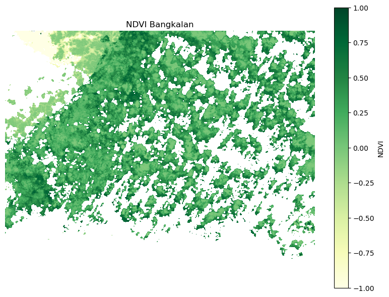

%%capture
pip install openeo geopandas shapely
import openeo
from shapely.geometry import box
import datetime
# 1. Connect ke backend Copernicus Data Space via OpenEO
connection = openeo.connect("openeo.dataspace.copernicus.eu").authenticate_oidc()
Authenticated using refresh token.
import openeo
from shapely.geometry import box
# 1. Koneksi ke OpenEO Copernicus
connection = openeo.connect("openeo.dataspace.copernicus.eu").authenticate_oidc()
# 2. Definisikan area Bangkalan (koordinat EPSG:4326)
bbox = box(112.7, -7.2, 113.1, -6.9)
spatial_extent = {
"west": bbox.bounds[0],
"south": bbox.bounds[1],
"east": bbox.bounds[2],
"north": bbox.bounds[3],
"crs": "EPSG:4326"
}
# 3. Waktu pencitraan
temporal_extent = ["2024-05-01", "2024-05-10"]
# 4. Load data Sentinel-2 L2A dengan band: B04 (red), B08 (NIR), dan SCL
datacube = connection.load_collection(
"SENTINEL2_L2A",
spatial_extent=spatial_extent,
temporal_extent=temporal_extent,
bands=["B04", "B08", "SCL"]
)
# 5. Ambil band klasifikasi awan (SCL)
scl = datacube.band("SCL")
# 6. Buat mask berdasarkan nilai SCL untuk area bebas awan
# SCL values: 4 = vegetation, 5 = bare soil, 6 = water, 7 = shadow
cloud_free_mask = (scl == 4) | (scl == 5) | (scl == 6) | (scl == 7)
# 7. Terapkan masking ke datacube
masked = datacube.mask(cloud_free_mask)
# 8. Hitung NDVI dari band yang sudah di-mask
ndvi_cube = masked.ndvi(nir="B08", red="B04")
# 9. Ambil nilai median sepanjang waktu (jika ada beberapa citra)
reduced_ndvi = ndvi_cube.reduce_dimension(dimension="t", reducer="median")
# 10. Jalankan proses dan simpan hasil ke GeoTIFF
job = reduced_ndvi.execute_batch(
outputfile="ndvi_bangkalan.tif",
format="GTiff"
)
print("✅ NDVI selesai dihitung dan disimpan sebagai ndvi_bangkalan.tif")
Authenticated using refresh token.
0:00:00 Job 'j-2505070504014c118c21c515e916e3d7': send 'start'
0:00:14 Job 'j-2505070504014c118c21c515e916e3d7': created (progress 0%)
0:00:20 Job 'j-2505070504014c118c21c515e916e3d7': created (progress 0%)
0:00:26 Job 'j-2505070504014c118c21c515e916e3d7': created (progress 0%)
---------------------------------------------------------------------------
KeyboardInterrupt Traceback (most recent call last)
Cell In[3], line 45
42 reduced_ndvi = ndvi_cube.reduce_dimension(dimension="t", reducer="median")
44 # 10. Jalankan proses dan simpan hasil ke GeoTIFF
---> 45 job = reduced_ndvi.execute_batch(
46 outputfile="ndvi_bangkalan.tif",
47 format="GTiff"
48 )
50 print("✅ NDVI selesai dihitung dan disimpan sebagai ndvi_bangkalan.tif")
File /opt/conda/envs/wekeolab/lib/python3.11/site-packages/openeo/rest/datacube.py:2649, in DataCube.execute_batch(self, outputfile, out_format, title, description, plan, budget, print, max_poll_interval, connection_retry_interval, additional, job_options, validate, auto_add_save_result, show_error_logs, log_level, **format_options)
2636 create_kwargs = {"auto_add_save_result": False}
2638 job = res.create_job(
2639 title=title,
2640 description=description,
(...)
2647 **create_kwargs,
2648 )
-> 2649 job.start_and_wait(
2650 print=print,
2651 max_poll_interval=max_poll_interval,
2652 connection_retry_interval=connection_retry_interval,
2653 show_error_logs=show_error_logs,
2654 )
2655 if outputfile is not None:
2656 job.download_result(target=outputfile)
File /opt/conda/envs/wekeolab/lib/python3.11/site-packages/openeo/rest/job.py:339, in BatchJob.start_and_wait(self, print, max_poll_interval, connection_retry_interval, soft_error_max, show_error_logs)
336 break
338 # Sleep for next poll (and adaptively make polling less frequent)
--> 339 time.sleep(poll_interval)
340 poll_interval = min(1.25 * poll_interval, max_poll_interval)
342 if status != "finished":
343 # TODO: render logs jupyter-aware in a notebook context?
KeyboardInterrupt:
import rasterio
import matplotlib.pyplot as plt
from matplotlib.colors import Normalize
import numpy as np
# 1. Buka file NDVI
with rasterio.open("ndvi_bangkalan.tif") as src:
ndvi = src.read(1) # Ambil band pertama
ndvi = np.where(ndvi == src.nodata, np.nan, ndvi) # Mask nilai nodata
# 2. Plot NDVI dengan colormap hijau
plt.figure(figsize=(8, 6))
plt.imshow(ndvi, cmap="YlGn", norm=Normalize(vmin=-1, vmax=1))
plt.colorbar(label="NDVI")
plt.title("NDVI Bangkalan")
plt.axis("off")
plt.tight_layout()
plt.show()

import rasterio
import numpy as np
from rasterio.features import shapes
import geopandas as gpd
from shapely.geometry import shape
# 1. Baca NDVI raster
with rasterio.open("ndvi_bangkalan.tif") as src:
ndvi = src.read(1)
ndvi = np.where(ndvi == src.nodata, np.nan, ndvi)
mask = ~np.isnan(ndvi)
transform = src.transform
crs = src.crs
# 2. (Opsional) Klasifikasikan NDVI ke kelas
# Contoh 3 kelas: 0–0.33 = rendah, 0.33–0.66 = sedang, >0.66 = tinggi
ndvi_class = np.zeros_like(ndvi, dtype=np.uint8)
ndvi_class[(ndvi > 0.0) & (ndvi <= 0.33)] = 1
ndvi_class[(ndvi > 0.33) & (ndvi <= 0.66)] = 2
ndvi_class[(ndvi > 0.66)] = 3
# 3. Konversi ke bentuk vektor (shapely polygons)
results = (
{"geometry": shape(geom), "properties": {"class": value}}
for geom, value in shapes(ndvi_class, mask=mask, transform=transform)
if value > 0 # Hanya area dengan kelas
)
# 4. Buat GeoDataFrame dan simpan sebagai Shapefile
gdf = gpd.GeoDataFrame.from_features(list(results), crs=crs)
gdf.to_file("ndvi_bangkalan.shp")
print("✅ NDVI berhasil dikonversi ke shapefile: ndvi_bangkalan.shp")
✅ NDVI berhasil dikonversi ke shapefile: ndvi_bangkalan.shp
import geopandas as gpd
import matplotlib.pyplot as plt
# 1. Baca shapefile
gdf = gpd.read_file("ndvi_bangkalan.shp")
# 2. Plot shapefile
plt.figure(figsize=(8, 6))
gdf.plot(column='class', cmap='YlGn', legend=True,
legend_kwds={'label': "NDVI Class",
'orientation': "horizontal"})
plt.title("Shapefile NDVI Bangkalan")
plt.xlabel("Longitude")
plt.ylabel("Latitude")
plt.tight_layout()
plt.show()
<Figure size 800x600 with 0 Axes>